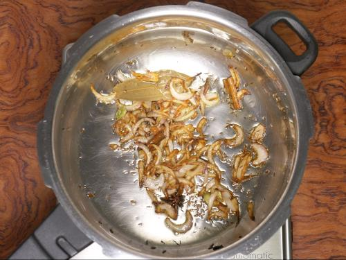

How to make Chicken-Biryani(Stepwise photos)
Description
Biryani is one of the most amazing royal delicacies introduced to Indians by the Persians.
Since then it has been much popular and is considered to be a luxurious treat to enjoy on special occasions.
Ingredients
1. This recipe needs half kg chicken (1.1 lbs.). Make few slits on all the chicken pieces and add to a large bowl. Then add
- 3 tablespoons plain yogurt (Indian curd)
- 1¼ tablespoons ginger garlic paste
- ½ to 1 tablespoon garam masala (or biriyani masala)
- ½ teaspoon salt
- ¼ teaspoon ground turmeric
- ½ to 1 teaspoon red chili powder (reduce for kids)
- 1 tablespoon lemon juice (optional)
2. Mix everything well and marinate the chicken. Cover and set this aside for 1 hour. You can also rest it overnight in the fridge.
3. Meanwhile add 2 cups basmati rice to a large pot and rinse it at least thrice. Drain and soak in fresh water for 30 mins. Drain to a colander after 30 mins. Optional – Soak a pinch of saffron strands in 2 tablespoons hot milk.
Cooking Chicken
4. Heat ghee or oil in a heavy bottom pot or pressure cooker. Make sure you use a large one for this. Using whole spices is optional but recommended. Use whatever you have. I use
- 1 bay leaf
- green cardamoms
- 6 cloves
- 1 inch cinnamon piece
- 1 star anise
- ¾ teaspoon shahi jeera (caraway seeds)
- strand mace
5. Add thinly sliced onions. On a medium heat, fry them stirring often until uniformly light brown.
6. This is the correct color of the onions. Do not burn them as they leave a bitter taste.

7. Add marinated chicken & saute until it becomes pale for 5 minutes.
8. Lower the flame completely. Cover and cook until the chicken is soft, tender and completely cooked.
9. Check if the chicken is cooked by pricking with a fork or knife. It has to be just cooked and not overdone. Evaporate any excess moisture left in the pot by cooking further without the lid.
10. Taste test and add more salt if needed. I added ¼ more salt here. Add
- ¼ cup plain yogurt (Indian curd)
- 1 teaspoon garam masala (or biryani masala)
- ¼ to ½ teaspoon red chili powder (optional)
- 1 slit green chili pepper (optional)
- 2 tablespoons chopped mint leaves (pudina)
Make Chicken Biryani
11. Mix everything well. Spread it evenly in a single layer.
12. Layer drained rice all over the chicken. To a separate bowl, pour 3 cups water and add ¼ to ½ teaspoon salt. If cooking in a pot, start with 3 cups water at this stage.
Stir and taste the water. It must be slightly salty. Pour 2 cups of this across the sides of the cooker or pot. Pour rest of the water over the rice gently.
13. Level the rice gently on top. Add 2 tablespoons more mint leaves.Do not mix up everything, the taste of the biryani cooked in the shown method is good. Optionally you can sprinkle 2 tablespoons fried onions & saffron soaked milk.
14. Finally cover the pot or cooker.
If cooking in a pot, cook on a medium heat until the rice is done completely. If the rice is undercooked pour ¼ to ½ cup boiling water at this stage. How much to add depends on the quality of basmati rice. Cook covered until the biryani rice is perfectly done, grainy and fully cooked. Rest it covered for 15 mins.
If cooking in a cooker, cook for 1 whistle. Later remove the cooker from the hot burner to stop cooking further.
15. When the pressure releases naturally, open the lid. Gently fluff up with a fork.
Serve chicken biryani in layers – top layer with rice and bottom layer with chicken. Enjoy with raita or shorba.